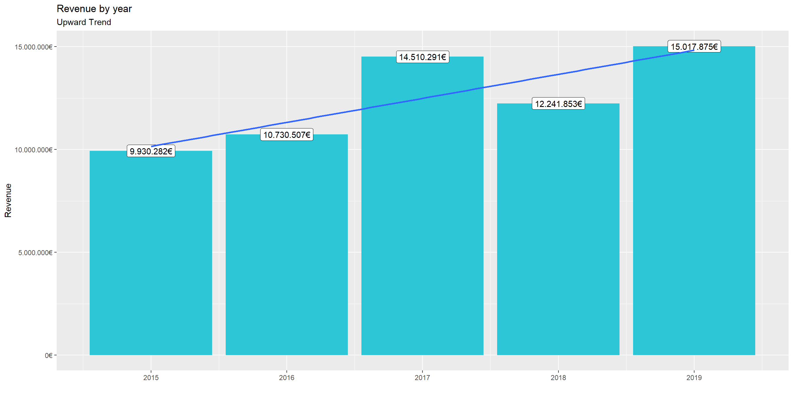
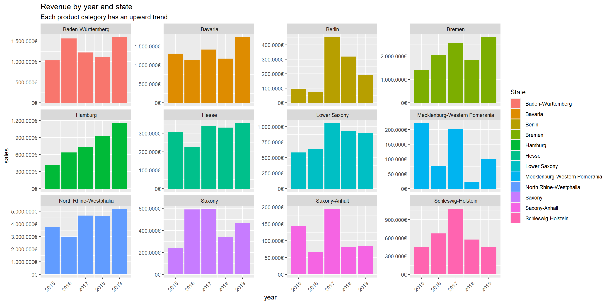
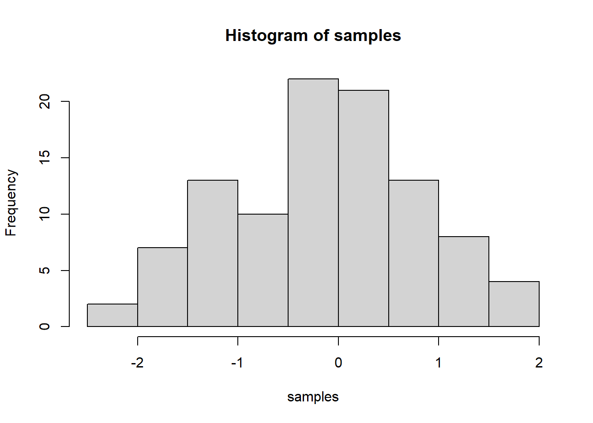

Last compiled: 2020-12-06
#import libraries
library(tidyverse)
library(readxl)
library(lubridate)
#load files
bikes_tbl <- read_excel ("D:/pADHAI/SEM_3/DataScience/DS_101/00_data/01_bike_sales/01_raw_data/bikes.xlsx")
orderlines_tbl <- read_excel ("D:/pADHAI/SEM_3/DataScience/DS_101/00_data/01_bike_sales/01_raw_data/orderlines.xlsx" )
bikeshops_tbl <- read_excel("D:/pADHAI/SEM_3/DataScience/DS_101/00_data/01_bike_sales/01_raw_data/bikeshops.xlsx")
#examine files
#join files using the keys product id, bikeshop id and customer id
bike_orderlines_joined_tbl <- orderlines_tbl %>%
left_join(bikes_tbl, by = c("product.id" = "bike.id")) %>%
left_join(bikeshops_tbl, by = c("customer.id" = "bikeshop.id"))
#Examine the joined files
# Select State as feature and examine the data
# wrangle data
bike_orderlines_wrangled_tbl <- bike_orderlines_joined_tbl %>%
separate(col = location,
into = c("city","state"),
sep = ",") %>%
mutate(total.price = price * quantity) %>%
select(-...1, -gender) %>%
select(-ends_with(".id")) %>%
bind_cols(bike_orderlines_joined_tbl %>% select(order.id)) %>%
select(order.id, contains("order"), contains("model"), contains("city"),state,
price, quantity, total.price,
everything()) %>%
rename(bikeshop = name) %>%
set_names(names(.) %>% str_replace_all("\\.", "_"))
#extract required column
sales_by_year_tbl <- bike_orderlines_wrangled_tbl %>%
select(order_date, total_price) %>%
mutate(year = year(order_date)) %>%
group_by(year) %>%
summarize(sales = sum(total_price)) %>%
mutate(sales_text = scales::dollar(sales, big.mark = ".",
decimal.mark = ",",
prefix = "",
suffix = "€"))
#plot bar chart
sales_by_year_tbl %>%
# Setup canvas with the columns year (x-axis) and sales (y-axis)
ggplot(aes(x = year, y = sales)) +
# Geometries
geom_col(fill = "#2DC6D6") + # Use geom_col for a bar plot
geom_label(aes(label = sales_text)) + # Adding labels to the bars
geom_smooth(method = "lm", se = FALSE) + # Adding a trendline
scale_y_continuous(labels = scales::dollar_format(big.mark = ".",
decimal.mark = ",",
prefix = "",
suffix = "€")) +
labs(
title = "Revenue by year",
subtitle = "Upward Trend",
x = "", # Override defaults for x and y
y = "Revenue"
)
sales_by_year_state_tbl <- bike_orderlines_wrangled_tbl %>%
# Select columns and add a year
select(order_date, total_price, state) %>%
mutate(year = year(order_date)) %>%
# Group by and summarize year and main catgegory
group_by(year, state) %>%
summarise(sales = sum(total_price)) %>%
ungroup() %>%
# Format $ Text
mutate(sales_text = scales::dollar(sales, big.mark = ".",
decimal.mark = ",",
prefix = "",
suffix = "€"))
#plot by year and locATION
head(sales_by_year_state_tbl,10)## # A tibble: 10 x 4
## year state sales sales_text
## <dbl> <chr> <dbl> <chr>
## 1 2015 " Baden-Württemberg" 1031924 1.031.924€
## 2 2015 " Bavaria" 1301461 1.301.461€
## 3 2015 " Berlin" 95853 95.853€
## 4 2015 " Bremen" 1395912 1.395.912€
## 5 2015 " Hamburg" 423090 423.090€
## 6 2015 " Hesse" 308609 308.609€
## 7 2015 " Lower Saxony" 584386 584.386€
## 8 2015 " Mecklenburg-Western Pomerania" 222003 222.003€
## 9 2015 " North Rhine-Westphalia" 3735092 3.735.092€
## 10 2015 " Saxony" 238371 238.371€sales_by_year_state_tbl %>%
ggplot(aes(x = year, y = sales, fill = state)) +
geom_col() + theme(axis.text.x = element_text(angle = 45, hjust = 1)) +
facet_wrap(~ state, scales = "free_y") +
scale_y_continuous(labels = scales::dollar_format(big.mark = ".",
decimal.mark = ",",
prefix = "",
suffix = "€")) +
labs(
title = "Revenue by year and state",
subtitle = "Each product category has an upward trend",
fill = "State" # Changes the legend name
)
library("writexl")
bike_orderlines_wrangled_tbl %>%
write_xlsx("D:/pADHAI/SEM_3/DataScience/DS_101/00_data/01_bike_sales/bike_orderlines.xlsx")
# 7.2 CSV ----
bike_orderlines_wrangled_tbl %>%
write_csv("D:/pADHAI/SEM_3/DataScience/DS_101/00_data/01_bike_sales/bike_orderlines.csv")
# 7.3 RDS ----
bike_orderlines_wrangled_tbl %>%
write_rds("D:/pADHAI/SEM_3/DataScience/DS_101/00_data/01_bike_sales/bike_orderlines.rds")Last compiled: 2020-12-06
library(glue)
library(httr)
library(jsonlite)
resp <- GET("http://api.open-notify.org/iss-pass.json", query = list(lat =53.5511, lon = 9.9937))
resp## Response [http://api.open-notify.org/iss-pass.json?lat=53.5511&lon=9.9937]
## Date: 2020-12-06 21:16
## Status: 200
## Content-Type: application/json
## Size: 522 B
## {
## "message": "success",
## "request": {
## "altitude": 100,
## "datetime": 1607289383,
## "latitude": 53.5511,
## "longitude": 9.9937,
## "passes": 5
## },
## "response": [
## ...data = fromJSON(rawToChar(resp$content))
data## $message
## [1] "success"
##
## $request
## $request$altitude
## [1] 100
##
## $request$datetime
## [1] 1607289383
##
## $request$latitude
## [1] 53.5511
##
## $request$longitude
## [1] 9.9937
##
## $request$passes
## [1] 5
##
##
## $response
## duration risetime
## 1 391 1607335587
## 2 608 1607341228
## 3 649 1607346990
## 4 650 1607352787
## 5 615 1607358591# WEBSCRAPING ----
# 1.0 LIBRARIES ----
library(tidyverse) # Main Package - Loads dplyr, purrr, etc.
library(rvest) # HTML Hacking & Web Scraping
library(xopen) # Quickly opening URLs
library(jsonlite) # converts JSON files to R objects
library(glue) # concatenate strings
library(stringi) # character string/text processing
# 1.1 COLLECT PRODUCT TYPES ----
url_home <- "https://www.radon-bikes.de/"
#xopen(url_home)
html_home <- read_html(url_home)
bike_family_tbl <- html_home %>%
html_nodes(css = ".megamenu__item > a") %>%
html_attr('href') %>%
discard(.p = ~stringr::str_detect(.x,"wear")) %>%
enframe(name = "position", value = "cat_subcat_url") %>%
mutate(family_id = str_glue("https://www.radon-bikes.de{cat_subcat_url}bikegrid"))
#bike_family_tbl
# 2.0 COLLECT BIKE DATA ----
bike_category_url <- bike_family_tbl$family_id[1]
#xopen(bike_category_url)
html_bike_category <- read_html(bike_category_url)
bike_name_tbl <- html_bike_category %>%
html_nodes(css = ".m-bikegrid__info .a-heading--small") %>%
html_text() %>%
enframe(name = "position", value = "name")
#bike_name_tbl
bike_price_tbl <- html_bike_category %>%
html_nodes(css = ".m-bikegrid__price.currency_eur .m-bikegrid__price--active") %>%
html_text() %>%
enframe(name = "position", value = "price")
#bike_price_tbl
model_price_tbl <- left_join(bike_name_tbl, bike_price_tbl)%>%
select(name, price)
head(model_price_tbl,10)## # A tibble: 10 x 2
## name price
## <chr> <chr>
## 1 "\n JEALOUS 8.0\n ~ 2599~
## 2 "\n JEALOUS 9.0\n ~ 2999~
## 3 "\n JEALOUS 10.0\n ~ 3999~
## 4 "\n JEALOUS 10.0 EA\n ~ 5299~
## 5 "\n JEALOUS 10.0\n ~ 3699~
## 6 "\n JEALOUS 10.0 EA\n ~ 3799€
## 7 "\n NEW JEALOUS SUPERLITE 1X\n ~ 999 €
## 8 "\n JEALOUS AL 8.0\n ~ 999 €
## 9 "\n JEALOUS AL 8.0 HD\n ~ 1299~
## 10 "\n JEALOUS AL 9.0\n ~ 1499~library(vroom)
library(data.table)
library(tidyverse)
col_types <- list(
id = col_character(),
type = col_character(),
name_first = col_character(),
name_last = col_character(),
organization = col_character()
)
assignee_tbl <- vroom(
file = "D:/pADHAI/SEM_3/DataScience/DS_101/02_data_wrangling/assignee.tsv",
delim = "\t",
col_types = col_types,
na = c("", "NA", "NULL")
)
col_types <- list(
patent_id = col_character(),
assignee_id = col_character(),
location_id = col_character()
)
patent_assignee_tbl <- vroom(
file = "D:/pADHAI/SEM_3/DataScience/DS_101/02_data_wrangling/patent_assignee.tsv",
delim = "\t",
col_types = col_types,
na = c("", "NA", "NULL")
)
Join_tbl <- merge(patent_assignee_tbl,assignee_tbl, by.x = "assignee_id", by.y = "id")
num_tbl<- Join_tbl%>%
select(patent_id,organization)%>%
count(organization)%>%
group_by(organization)
final_tbl <- num_tbl %>%
select (organization,n)%>%
arrange(desc(n))
#List of top ten companies with most assigned/granted patents.
head(final_tbl,10)## # A tibble: 10 x 2
## # Groups: organization [10]
## organization n
## <chr> <int>
## 1 International Business Machines Corporation 139091
## 2 Samsung Electronics Co., Ltd. 93561
## 3 Canon Kabushiki Kaisha 75909
## 4 <NA> 73070
## 5 Sony Corporation 54342
## 6 Kabushiki Kaisha Toshiba 49442
## 7 General Electric Company 47121
## 8 Hitachi, Ltd. 45374
## 9 Intel Corporation 42156
## 10 Fujitsu Limited 37196So, let’s say you are learning how to make a histogram in R. For example, maybe you want to sample 100 numbers from a normal distribution with mean = 0, and standard deviation = 1, and then you want to plot a histogram. You can do this right here by using an r code block, like this:
samples <- rnorm(100, mean=0, sd=1)
hist(samples) #Challenge 4 :
When you knit this R Markdown document, you will see that the histogram is printed to the page, along with the R code. This document can be set up to hide the R code in the webpage, just delete the comment (hashtag) from the cold folding option in the yaml header up top. For purposes of letting yourself see the code, and me see the code, best to keep it the way that it is. You’ll learn that all of these things and more can be customized in each R code block. ## 2. Visualize the distribution of the mortality rate (deaths / population)